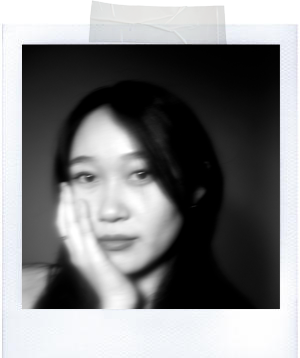

hye•lynn•suh
/hey,lin s-uh/
noun • present
1. a product designer curating experiences that make structured design feel natural, emotional, and profoundly human
2. a graduate student pursuing her Master's of Professional Studies at Parsons: The New School as a Communication Design Major
noun • past
graduated from Cornell Univeristy with a Bachelor of Fine Arts
verb
wholeheartedly believes that you can tell who a person is from their music playlists